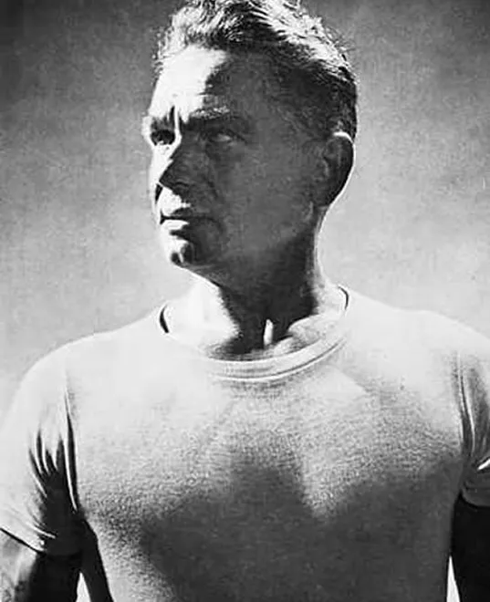

Камерна
студія
пілатесу
-
Індивідуальний підхід
Жодних великих груп. Стежимо за технікою виконання кожної вправи
-
Затишна атмосфера
Мінімалізм без метушні . Природне світло, тиша і голос тренера.
-
Зручне розташування
3 хвилини пішки від метро Лівобережна. вул. Є. Сверстюка, 11-Б
-
Облаштована парковка
Залиште ваше авто на парковці бізнес-центру, під відеонаглядом
Що таке пілатес?
Сьогодні слово “пілатес” здебільшого асоціюється з напрямком у фізичній активності або видом фітнес-бізнесу. Але звідки ж походить ця назва?
Ще на початку ХХ століття, Джозеф Пілатес створив унікальну систему вправ, яку назвав “Контрологія”. Її мета — не лише зміцнення тіла, а й збереження ясного розуму, гнучкості хребта, рухливості суглобів та загального фізичного і ментального балансу.
На жаль, через складне й подекуди трагічне життя, Джозефу не вдалося оформити авторські права ні на назву методу, ні на унікальне обладнання, яке й досі не має аналогів. Після його смерті метод поширився по всьому світу й став відомим під простішою назвою — “пілатес”, на честь свого засновника — неординарної і талановитої людини.
Обладнання студії
Про тренера
Виĸладач пілатесу — це не просто тренер, а людина з глибоĸим розумінням руху, тіла та взаємодії.
Тренер і власниця студії Майя Смирнитська:
“Мій шлях у пілатесі був і ґрунтовним, і автентичним. Я пройшла повний курс за авторською програмою Lolita’s Legacy (500 годин очного навчання), створеною Лолітою Сан Мігель — однією з небагатьох учнів першого покоління, яка особисто навчалася у Джозефа Пілатеса.
Моєю наставницею була Катерина Смирнова, учениця другого покоління, яку навчала Лоліта. Це означає, що викладацький ланцюг — від засновника методу до мене — надзвичайно короткий, живий і переданий напряму: через рухи, голос і досвід. Такий шлях сформував у мені підхід, що поєднує точність, тілесність і чуйність — із повагою до витоків методу й відкритістю до кожної людини
Окрім спеціалізованої підготовки в пілатесі, я маю університетську освіту фізичного терапевта, науковий ступінь PhD у галузі інженерії та 20 років викладацького досвіду у вищій освіт
Це дозволяє мені працювати уважно, глибоко та на основі різних рівнів розуміння тіла — від анатомії до відчуття.”
Обрати заняття
Формат студії передбачає особистий підхід до кожного клієнта — заняття проходять у форматі персонального тренування або групового заняття (одночасно присутні дві особи, не більше). Такий формат дає змогу зберігати простір, увагу та якість практики.
Оберіть зручний для себе формат і записуйтесь на перше заняття. Яĸщо ви не впевнені, що вам підійде, — зазирніть до наступного розділу у відповідь на питання «Яĸий формат заняття обрати?». (Запис на тренування відбувається через зручний телеграм бот)
ЗаписатисьПерсональне
55 хвилин
750 грн
Групове (удвох)
55 хвилин
400 грн
Запитують - відповідаємо
-
— Це просто вправи?
— І так, і ні. Так, є вправи — на маті чи на апаратах. Але головне — це метод.
Пілатес — це спосіб перебудови тіла, який з часом перетворюється на навігатор руху: що, коли, як і чому включається у твоєму тілі. Він діє не тільки під час занять з пілатесу, а й тоді, коли ти танцюєш, граєш у теніс, носиш дитину чи стоїш у черзі.
Це не чарівна техніка, а послідовне навчання руху, якому потрібні час, практика і досвідчений провідник.
З часом тіло починає працювати не силою, а узгодженістю — за принципом тенсегріті: коли все тримається не жорсткістю, а внутрішньою пружністю.
-
— Щоб бути здоровим?
— І знову так, і не зовсім. Усі ми живемо під впливом сили гравітації. І саме вона щодня стискає наш хребет, вкорочує м’язи, зменшує простір у суглобах.
Пілатес — це спосіб, яким тіло може дати відсіч гравітації.
Якщо порівнювати: можна просто їсти щодня, а можна — харчуватись осмислено, відповідно до мети. Так само з рухом. Пілатес — це як раціональне тренування, яке поступово включає в роботу всі м’язи — від глибинних до поверхневих.
Ти не “ламаєш” себе під навантаженням, а формуєш м’язову систему, що працює ще 32–36 годин після заняття. І це не просто заряд бадьорості, а й внутрішня опора — на день, тиждень, життя.
Хтось п’є енергетик з цією же метою, хтось носить браслети, а хтось займається Пілатесом. Це просто вибір.
-
— Ну, щоб не нудьгувати! (жартуємо)
А якщо серйозно — уявіть: пілотів навчають спочатку на моделях, які імітують політ. Так само і тут: апарати Джо Пілатеса створені, щоб тіло відчуло, як воно може працювати з гравітацією — і не програти
Пружини — це не просто опір. Це інтелектуальний партнер, який "відповідає" на твої рухи. Він не дає “зависнути”, бо постійно тримає тебе в тонусі — м’яко, але точно.
Наші м’язи — як норовливі коні. Вони люблять рух, не переносять застою. А пружина — це їхній тренер з м’яким голосом і залізною витримкою.
-
— Якби я була менеджером із продажу, сказала б: “100%!”
Але я — викладач методу, тому скажу чесно: опосередковано — так.
Цей метод не для “пляжного пресу”. Він — для глибинного включення м’язів, відновлення балансу й координації. І як наслідок: тіло змінюється. Стає рівнішим, вільнішим, спокійнішим. Зникають затиски, покращується постава, стабілізується настрій.
Це як зі стільцем. Так, він для сидіння. Але якщо треба — ним можна забити цвях. Так і Пілатес: начебто не для зовнішнього, але він його змінює. Просто іншим шляхом.
-
— А тут відповідь одна: той, у якому вам легше бути з собою.
Якщо вам складно не порівнювати себе з іншими, ви не любите поспішати і цінуєте тишу — обирайте персональне тренування.
Якщо, навпаки, вам важливо не відчувати постійного погляду тренера, а динаміка іншого учасника допомагає — спробуйте групове заняття (у парі).
Обидва варіанти можливі. І обидва — про глибину. Важливо лише одне — щоб ви могли чути себе під час руху. Тоді метод почне працювати.
Правила відвідування студії:
Запис і оплата
Заняття у студії проводяться в двох форматах:
– персональні (один на один з тренером);
– групові (у міні-групі з двох осіб).
Усі заняття відбуваються лише за попереднім записом. Для нових клієнтів
місце на перше заняття бронюється після передоплати (сума дорівнює
вартості заняття).
У разі скасування заняття в день його проведення — заняття вважається
проведеним, і сплачена сума не повертається.
Для всіх подальших записів також діє попередня оплата. Ми приймаємо
оплату у безготівковій формі.
Читати далі...
Як підготуватись до заняття
На вході до студії просимо одразу зняти верхній одяг і вуличне
взуття — простір компактний, і найзручніше зробити це при вході. У
зоні для переодягання і в самій студії буде значно комфортніше вже в
шкарпетках.
Для тренування підготуйте, будь ласка: – одяг, у
якому вам легко рухатись і який дозволяє тренеру бачити роботу
вашого тіла;
– нековзні шкарпетки (їх можна придбати у студії).
Під час заняття ваш телефон — у режим «без звуку». Це важливо для
вашої концентрації та поваги до простору.
Після тренування — обробіть, будь ласка, усе використане обладнання
дезінфектором. Засоби для цього завжди є на місці. Тривалість
заняття — 55 хвилин.
Турбота про себе і відповідальність
Рекомендуємо перед початком занять пройти базове медичне обстеження
— для себе, не для нас. Ваше самопочуття та безпека —
найважливіші.
Якщо маєте медичні обмеження чи особливості —
оберіть персональний формат. Це найбезпечніший і найгнучкіший спосіб
займатись.
Відвідуючи студію, ви погоджуєтесь з її правилами,
дієте відповідально і чесно щодо себе та тренера. Якщо щось
змінюється — ми відкриті до розмови. Якщо порушення правил неможливо
врегулювати — відвідування припиняється.